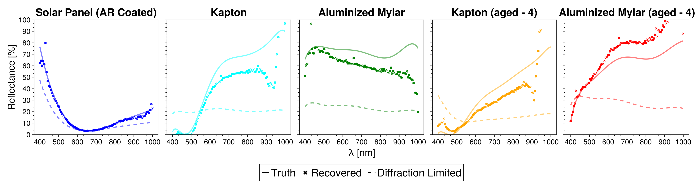
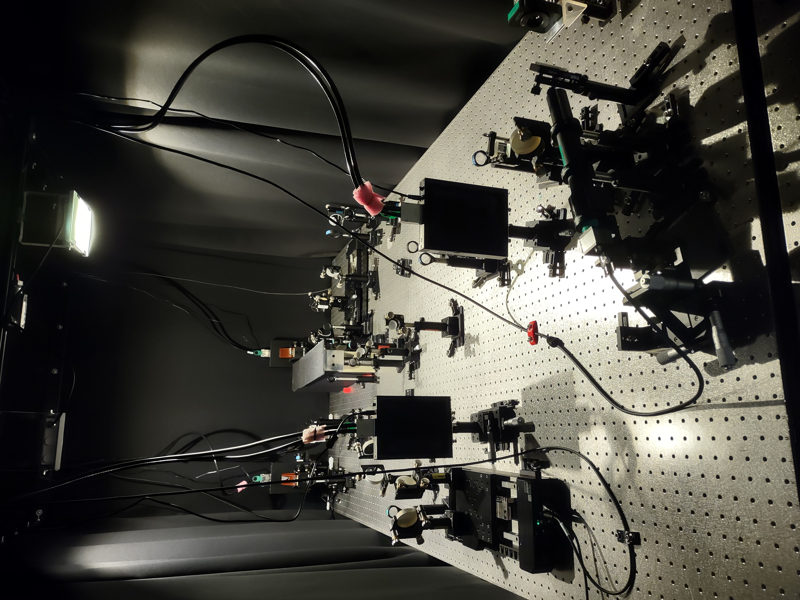
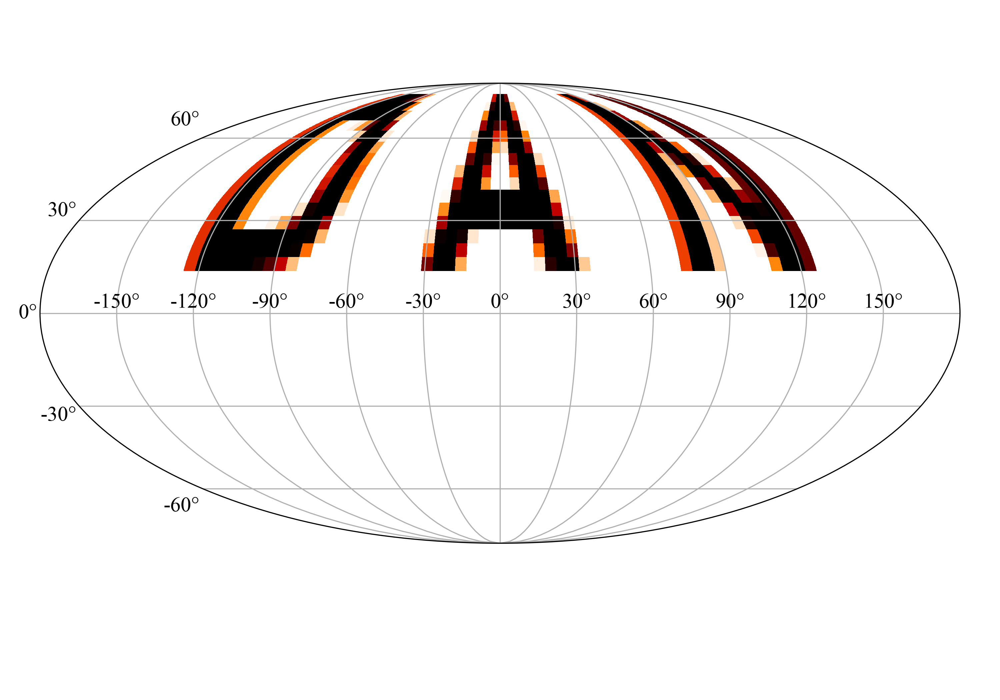
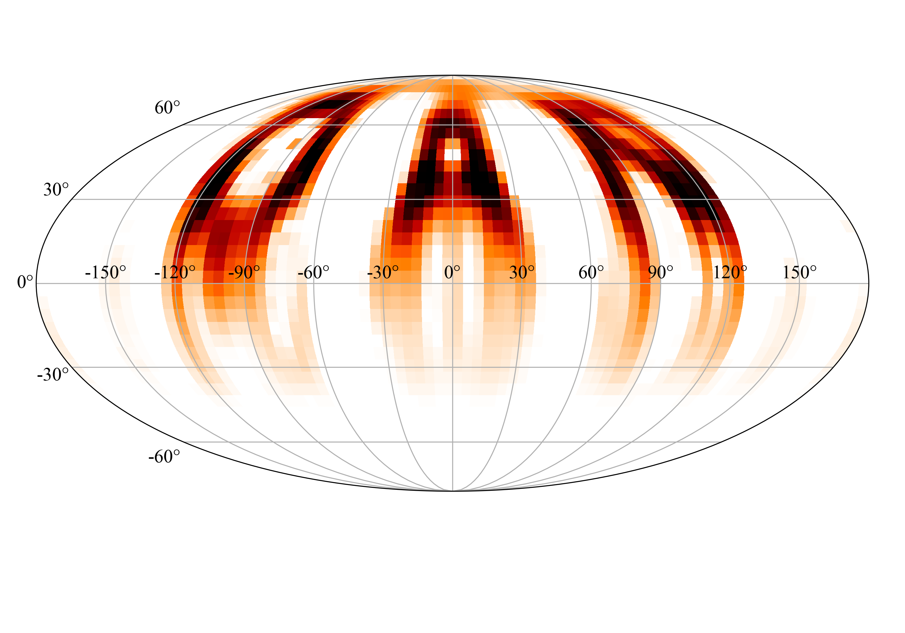
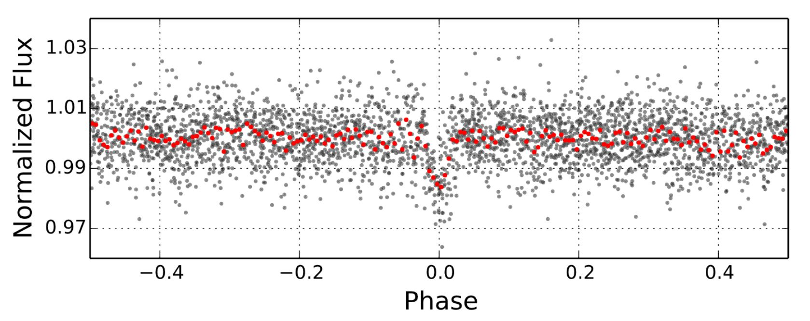
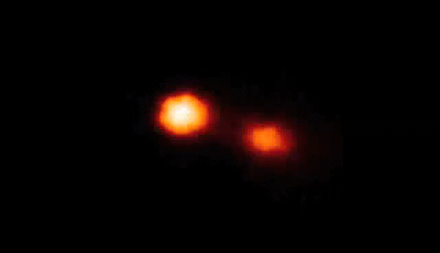

Research
Hyperspectral Speckle Imaging
Hyperspectral speckle imaging leverages both wavelength information encoded on broadband images and diffraction-limited information encoded in speckle images. Using both of these things it is able to recover the reflectance spectra per pixel of the materials on a resolved satellite. Currently, materials in space experience a harsh barage of particles and radiation. How these things affect the reflectance spectrum of a material is not well understood, and ground-based and space-based studies have to date been able to fully capture the effects of space weathering. Thus, hyperspectral speckle imaging allows for in-situ measurements of a material's spectrum to be measured and accurate measurements of aging to be made.
Improved Wavefront Sensing
My current work focuses on improving wavefront sensing technology and software for speckle imaging. In the Remote Sensing for Space Sciences lab at GSU we are working on an atmospheric turbulence simulator for testing wavefront sensors and Speckle imaging algorithms. We are developing post-processing techniques that will allow us to recover the complex wavefront using a variety of diversity methods and exploiting and frozen flow behavior of the atmosphere over short timescales. With these wavefronts we will beat the diffraction limited of the telescope and gain unprecedented detail on observed targets (satellites, galaxies, clusters, etc.), and we also hope to beat scintillation and achieve space-based photometric precision from the ground.
Dynamical Doppler Imaging
|  |  |
Another current project of mine focuses on developing an open-source Doppler imaging, interferometric imaging, and light curve inversion-capable code and using dynamical imaging regularizers to recover high-fidelity images of stellar surfaces. Traditional imaging campaigns produce uncorrelated snapshots of a star's surface over time. Dynamical imaging stitches together whole datasets spanning multiple epochs. This provides the advantage of being able to produce smooth movies of a star's surface. The specific dynamical regularizers I am interested in recovers a pixel-velocity field on the star's surface that can be used to smoothly evolve the star and predict future surface evolution. These recovered pixel-velocity fields will hopefully be used to reveal the nature of differential rotation and track spots over time to study stellar dynamos.
Exoplanets
Throughout my undergrad I was heavily involved with photometric follow up for the KELT network. I helped lead the discovery of KELT-23Ab, a hot Jupiter on a death spiral into its host star that is close to the TESS and JWST continuous viewing zones. I was fortunate enough to work with the team at the University of Southern Queensland on several projects such as revising exoplanet parameters using newly released Gaia data, photometric commissioning of the MINERVA-Australis array, and decomposing high eccentricity, single planet systems into multi planet, low eccentricity systems.
Interacting Binaries
In my undergrad I was also very fortunate to work on a very exciting class of binary stars known as interacting Algol-type binary stars. These stars experience mass transfer that builds a transient, unstable accretion disk that can build and then disappear unexpectedly. When observed these systems fall into one of two states: a stream-dominated state or a disk-dominated state. Interacting algols can oscillate between these states by an unknown mechanism and at an unknown timescale. Under the guidance of Dr. Phill Reed I used the technique of back projection Doppler tomography to indirectly image the different accretion features present in the system in the hopes of learning about the cycles that modulate the stream's strength and disperse the transient accretion annulus.